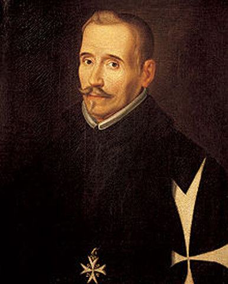

Fernando de Rojas
(La Puebla de Montalbán, España, h. 1470 - Talavera de la Reina, id., 1541) Escritor español, autor de La Celestina. Fernando de Rojas procedía de una familia acomodada de judíos conversos de cuatro generaciones que fue perseguida por la Inquisición. Estudió derecho en Salamanca y, como todos lo estudiantes salmantinos de aquella época, debió de cursar tres años obligatorios en la Facultad de Artes, por lo que seguramente conoció los clásicos latinos y la filosofía griega. En posesión del título de bachiller en Leyes, para el que tuvo que estudiar nueve o diez años, comenzó a ejercer como abogado en Talavera, de donde llegó a ser alcalde.

Primera edición de La Celestina
Se cree, casi con certeza, que escribió un solo libro, pero de una importancia fundamental en la historia de la literatura: La Celestina. La primera edición que conservamos fue publicada anónimamente en 1499, en Burgos, con el título de Comedia de Calisto y Melibea. La obra está escrita como una pieza de teatro, en forma dialogada, y dividida en actos; la primera edición tenía dieciséis actos, y las de 1502, tituladas Tragicomedia de Calisto y Melibea, veintiuno.
Pese a este carácter de obra dramática, su extensión la hace casi irrepresentable. En realidad, fue escrita para ser leída en voz alta en un círculo de humanistas u oyentes cultos, los cuales pudieron haber hecho aportaciones; se sabe que el manuscrito circuló bastante antes de que el autor lo entregase a los impresores. Se calcula que de 1499 a 1634 se publicaron 109 ediciones en castellano, no sólo en España sino también en otros países de Europa, donde además fue traducida a diversas lenguas.
En la Carta del autor a un su amigo, que precedió a la obra en la edición de 1500 (Toledo), Rojas declara que encontró escrito el primer acto y le gustó tanto que decidió completar la obra. Esta afirmación ha sido corroborada por la mayoría de estudiosos de La Celestina: de este modo, el extenso acto I (ocupa cerca de la quinta parte de sus páginas) habría sido escritor por una autor cuya identidad aún no ha sido verificada (Rojas mencionó en la Carta a Juan de Mena y Rodrigo Cota como posibles autores).
Rojas también aclaró que los "argumentos" o resúmenes que preceden a cada acto fueron añadidos por los impresores. A esta edición se agregaron, además, once octavas acrósticas escritas por Rojas y, al final del libro, seis octavas escritas por Alonso de Proaza, un humanista que fue el corrector de la edición y que reveló cómo por los acrósticos se puede saber que Rojas es el autor del libro, ya que la Carta del autor a un su amigo no llevaba firma.
A lo largo de las sucesivas ediciones del siglo XVI, el libro sufrió innumerables modificaciones y agregados, probablemente no debidos a la pluma de Fernando de Rojas. Se ha discutido si son de su autoría los cinco actos que tiene de más la edición que aparece con el título de Tragicomedia de Calisto y Melibea (1502), quizá escritos a petición de los lectores, que querían que se prolongara la historia de amor de Calisto y Melibea. Desde un primer momento, al parecer, el público rechazó el título de Comedia (según Rojas dado por el primer autor). Pronto se obvió el de Tragicomedia y empezó a llamarse Celestina o La Celestina al libro destinado a ser, con este nombre, uno de los más famosos de la literatura universal. Menéndez Pelayo lo consideró el mejor libro español después de Don Quijote de la Mancha.